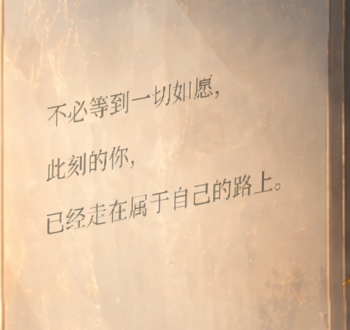
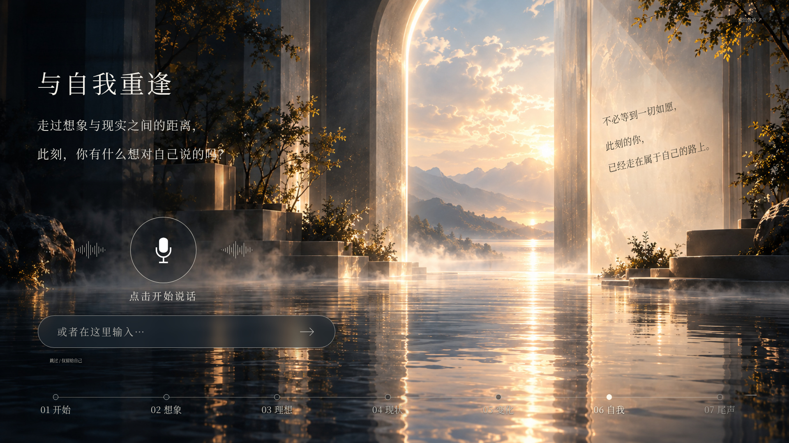
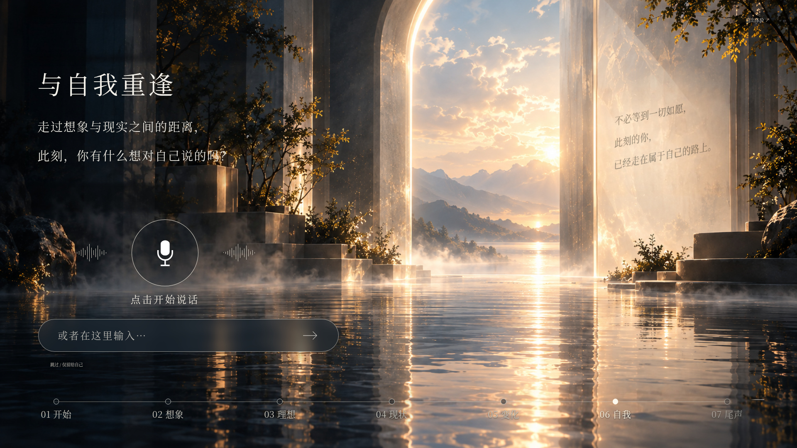
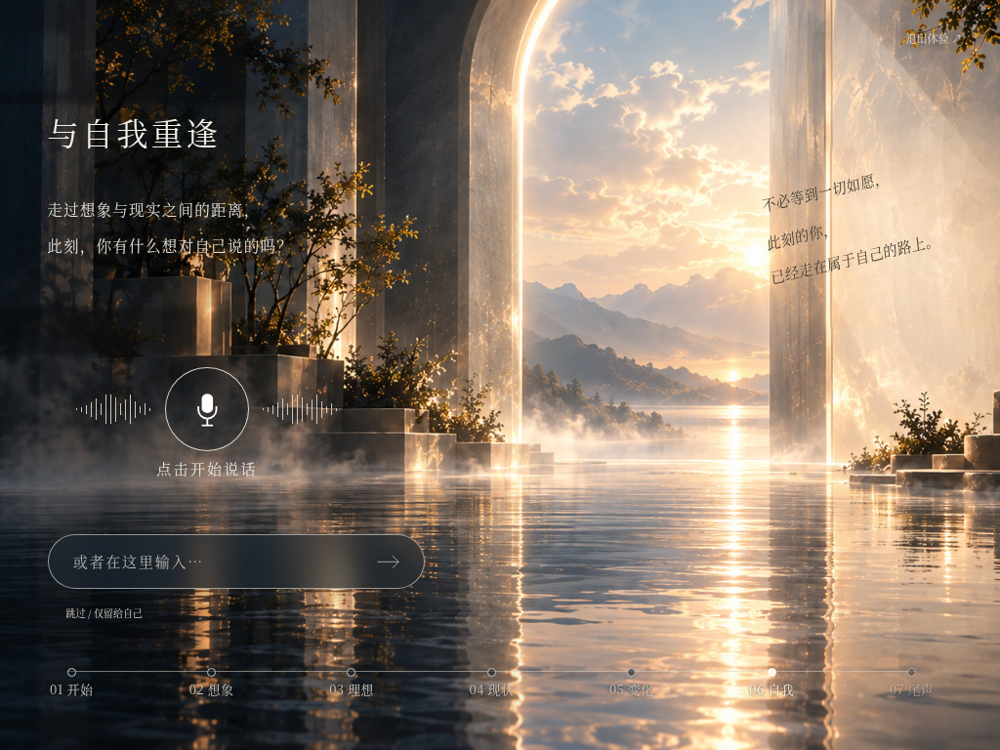
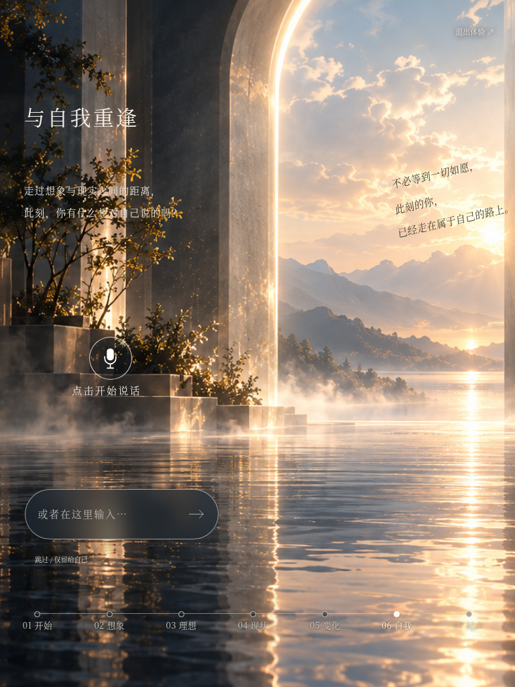
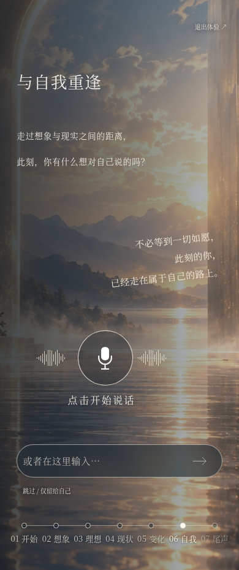

Page 06 · 镜面寄语局部融合预览
任务尚未全部完成：桌面融合已实现，窄屏待确认。
390 手机与 768 竖屏的原背景裁切中，右侧镜面完全在屏幕外；1024 的镜面也未完整露出。遵守本轮“不改变背景整体构图”的要求，当前没有擅自移动背景，窄屏保留原呈现，未将其标为通过。需要用户决定是否允许仅第 06 页窄屏调整同一背景的裁切位置。
文字保持原三行与现有字体配置。桌面采用实图四角单应透视、multiply、暖灰/蓝灰字迹以及来自原镜面纹理的明暗遮罩。没有矩形底板、毛玻璃卡片、强阴影、重复高光文字或新背景。字迹保持独立 HTML，可维护，未写进图片。
1920、1672、1366 三种桌面尺寸检查通过：字迹完整落在镜面内并留白；修改前后像素对比确认所有变化只在镜面寄语区域，左侧内容、控件、流程轴和周围场景一致。六种尺寸实际自述、分享确认、进入 07 和退出通过；构建、基础测试、28 个页面组合的原流程回归、三类模拟语音通过。真实硬件麦克风未实测。
镜面局部 · 浏览器 DPR=2 实际截图

局部图来自浏览器直接截图，不是重新绘制的艺术图。原玻璃暖金反光和纹理保留，明亮纹理对字迹产生轻微的局部调制。
桌面 · 修改前后整页
1920px 宽
修改前

修改后

1672px 宽
1366px 宽
同一场景的三种混合模式实测
选择 multiply。soft-light 与 overlay 在亮部字迹过淡，不作为最终方案。
窄屏 · 保留现状，尚未通过
| 尺寸 | 实际可见镜面宽度 | 验收状态 |
|---|---|---|
| 1024×768 | 167.58px | 未完成，待裁切选择 |
| 768×1024 | 0.00px | 未完成，待裁切选择 |
| 390×844 | 0.00px | 未完成，待裁切选择 |
以下是当前实际截图，不作为合格效果展示。与修改前整页像素一致，说明没有偷偷移动背景或改变其他 UI。仅靠字色和透视不能在不可见的镜面内放入可读的三行文字。
查看 1024px 当前窄屏（未通过镜面内定位）

查看 768px 当前窄屏（未通过镜面内定位）

查看 390px 当前窄屏（未通过镜面内定位）
